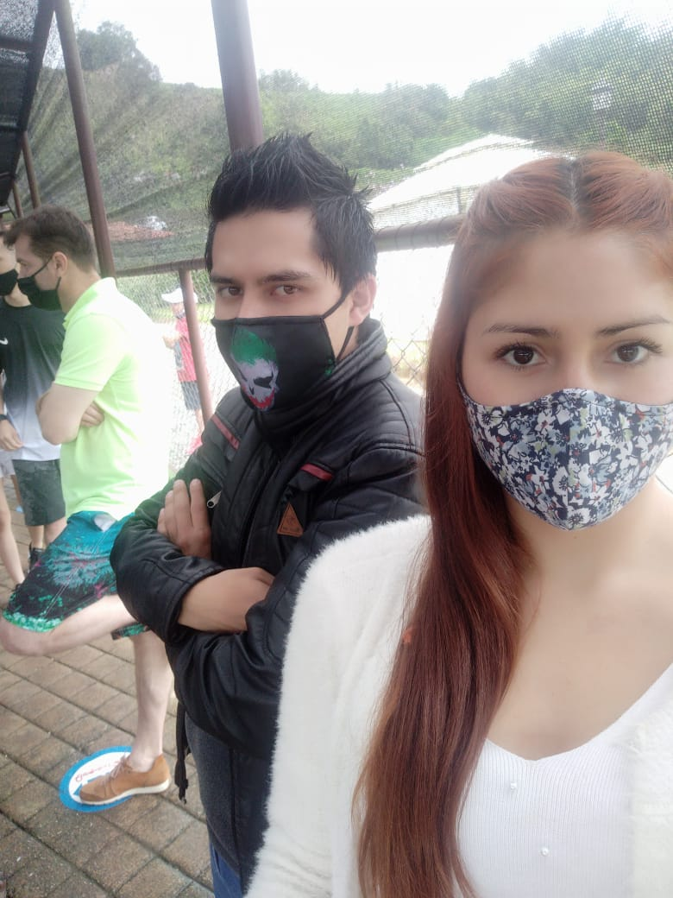
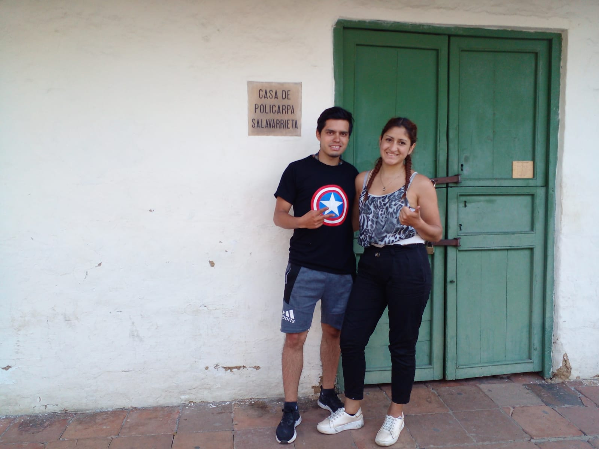
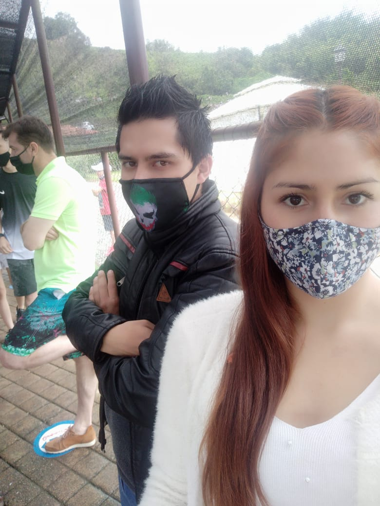
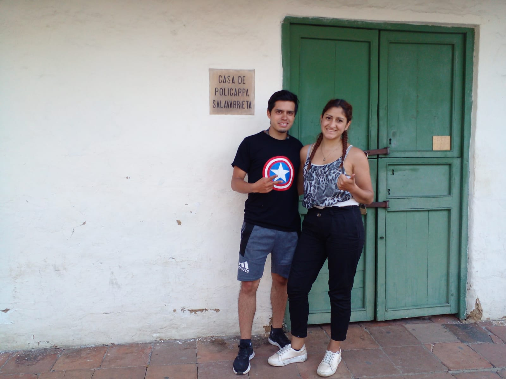

Vestido Novia, las mejores Tendencias vestidos de Novia, los factores más importantes a la hora de elegir el vestido de novia, es escoger el corte o estilo del vestido. Por eso, es vital escoger un vestido de novia adecuado para resaltar ciertos atributos de tu cuerpo que más te gustan o por el contrario, disimular aquellas zonas de tu cuerpo con las que no te agradan.
 




Vestido Novia, las mejores Tendencias vestidos de Novia, los factores más importantes a la hora de elegir el vestido de novia, es escoger el corte o estilo del vestido. Por eso, es vital escoger un vestido de novia adecuado para resaltar ciertos atributos de tu cuerpo que más te gustan o por el contrario, disimular aquellas zonas de tu cuerpo con las que no te agradan.AngieDaniela Gutirerrez Ladino
| Elemento #1 | Elemento #2 | Elemento #3 | Elemento #4 |
| Elemento #5 | Elemento #6 | Elemento #7 | Elemento #8 |
| Elemento #1 | Elemento #2 | Elemento #3 | Elemento #4 |
| Elemento #5 | Elemento #6 | Elemento #7 | Elemento #8 |